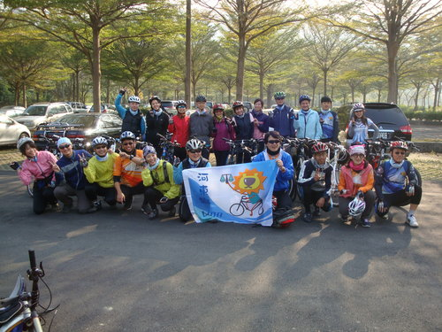
一年一度之大崗山鐵馬之旅，在「過了山坡就到了」的慣犯洪培睿學長(下稱「洪山坡」)策劃之下，終於再度隆重登場了。受到前次一個山坡、又一個山坡的驚嚇，於「洪山坡」打包票此次路程絕對輕鬆之號召下，善良的小獅友們紛紛響應，在冷吱吱的風嘶聲中，兵分三路，分別從高雄地院、鳳山宿舍及崗山捷運站至大崗山停車場集合，準備再一次挑戰崗山好漢坡喔!
小編按：
1.高雄市大崗山位於岡山區東北6公里處，是一座隆起於平原上覆舟似的台
狀小方山，山區最高312公尺，地質屬珊瑚礁石灰岩。因其特殊的階梯斷層構
造，加上石灰岩地質溝谷，乃構成大崗山風景區多樣且迷人的自然景觀。清代
即以「崗山樹色」列為「鳳山八景」之一，也因為綠意景色清幽廣逸，使得大
崗山的清修寺庵遍佈山區，並得「台灣佛山」之讚稱，尤以歷史超過200年的
「超峰寺」最著名。
2.民國70年代以前，由於軍事需要的理由，大崗山的大部份地區均劃入軍
事管制區，一般遊客與學生都禁止進入；因此，也讓外界對於大崗山的
印象蒙上一層神秘的面紗。時至今日，軍事管制區的面積大為縮小，因
此現今大崗山每日上山的民眾絡繹不絕，不過大多數人的活動範圍都在
前山，其實後山巖的部分更多自然生物的景觀。如一線天、石母乳、瘦
身洞、密婆洞、清涼洞、日據軍用洞穴...等都是可看的景點。(資料來
源：旅遊資訊王、TraNews)
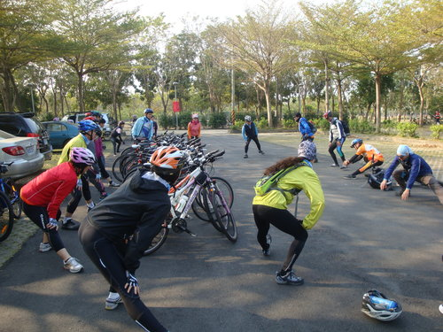
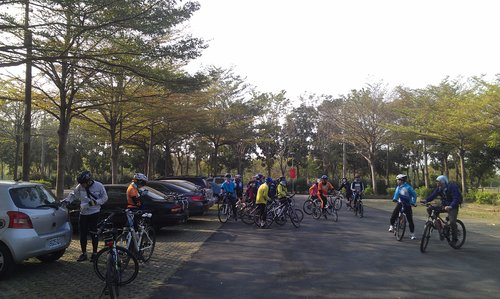
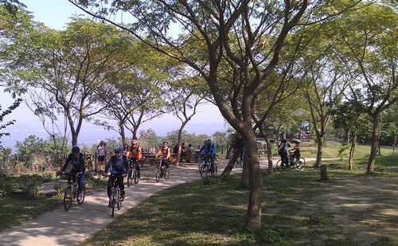
冷風+陽光=老骨頭+暖身操=‥‥??疑!這樣的推論過程好像不太對喔!唉!不管，總之為了身體更加軟Q、避免在冷風吹襲下個個變更「抽筋王」(不是海賊王喔!)，通通一字排開，在文博學長一個口令、一個動作下，下腰、伸展、轉體‥完成熱身後，準備上車啦!
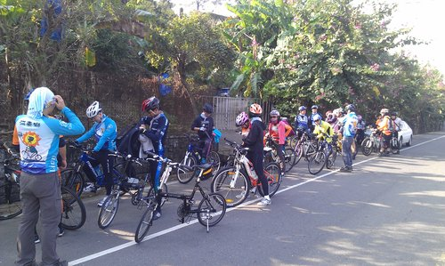
「洪山坡」學長說：先給各位小獅友們一盤小菜，騎騎大馬路、小小坡度，一路好走，對吧!我沒有騙你們吧‥‥(待會就知道苦頭，讓你們知道「坡」字怎麼寫‥)
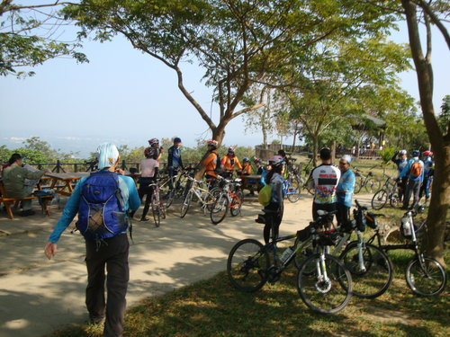
中場休息，喝杯「洪山坡」學長特地從山下背著煮水工具、清水及最近大陸炒著正熱的「臭普茶」(台語發音，即「普洱茶」)，暖暖身子、聊聊八卦，從半山腰俯看大崗山風景。
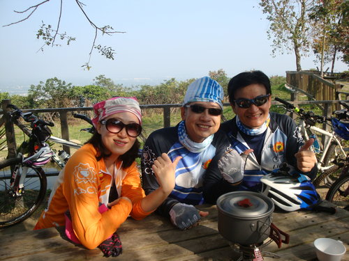
高院三仙翁，在此先向各位拜個早年，祝各位小獅友們福祿壽俱全、喜樂平安、體健安康‥‥喔!!
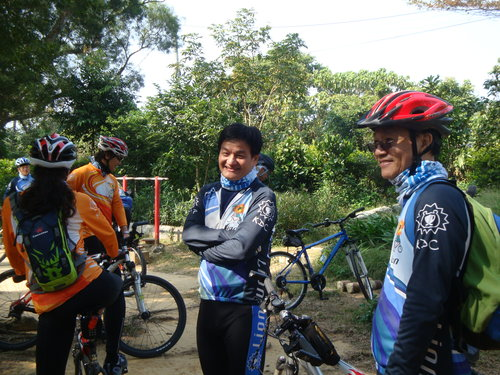
社長說：「超哥，天氣冷，避免您老人家休息太久身子冷掉，講個笑話讓您暖暖身子吧。」
超哥回應道：「就看你的功力如何能讓我舒坦、舒坦‥」
社長說：
「天氣又開始變得冷颼颼了，還飄著絲絲的細雨‥姐妹
兩人要去逛百貨公司，經過公車站牌附近的銀行，就
想先去銀行外面的提款機領點錢，但不巧正好碰到運
鈔車正在裝鈔。姐妹兩人站在提款機旁邊等了半天，
手都快凍僵了，還不時要忍受保全警衛飄來懷疑的眼
光。姐一如往常簡短的問妹：「凍手嗎?」，妹照舊簡短
的回應道：「凍手!」。瞬時~四個保全警衛的其中兩桿
槍頭轉向姐妹倆。姐似乎嚇呆了!沒有做任何的解釋!
妹著急~大聲地對姐喊到：「姐~他們這樣，妳怎麼都還
不開腔呢?」瞬時~四個保全警衛的四桿槍頭全轉向了
姐妹倆。~~被扭往派出所後~警察問姐：「妳叫什麼名
字?」姐答：「蔣英羽。」警察稍微提高音量：「妳叫什
麼名字?」姐再回答：「蔣英羽」，警察大聲：「妳~叫~
什~麼~名字?!」姐也大聲回道：「蔣~英~羽」，警察：
「吼~好、好、好，What is your name?」姐生氣~沈默以
對!警察無奈~轉頭問妹：「What is your name?」妹有
點怕，很快的回答他：「蔣國羽‥」。」
超哥用手掩口噗哧一笑說：「真有你的，社長位子交給你果然
是對的‥」
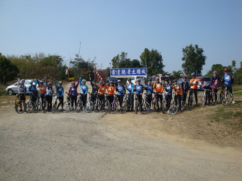
終於騎上此次正常道路的終點，休息一下，舉個手，為自己歡呼一下，也祝福大家在未來的一年心想事成‥‥。
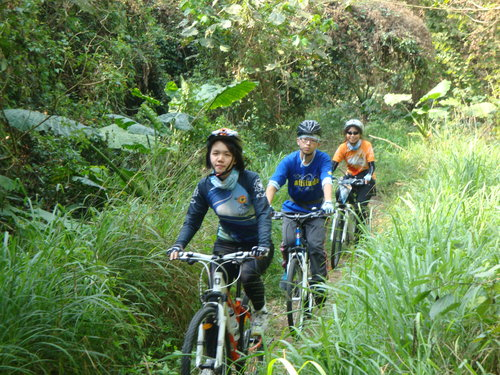
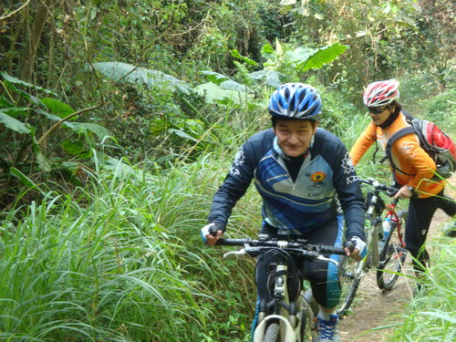
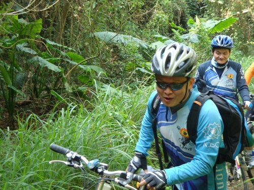
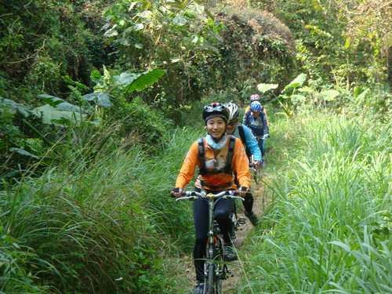
接下來就是「洪山坡」學長所推薦的私房景點à「一線天」，順便讓大家了解什麼叫做「off road」，也讓你們知道什麼叫做「牽」腳踏車的困難度及功力‥‥。
小編按：
本草綱目記載：「『off- road』性躁熱，服之易升肝火、盜汗，損筋骨，不宜久服」(李時珍大聲咆哮：亂寫)，小編更正說：「『off- road,』 ，依字面解釋就是離開一般未舖設的道路，騎乘在崎嶇不平、石頭山路、有落差的林間小路，亦即指「越野」之意，須騎乘較公路車較粗.較重、鋼性較強(因應山林.涉水.跳躍等用途).並以中跨點.胎面較寬.胎紋較深之粗顆粒巧克力胎之單車(有避震前叉或前後雙避震.巧克力胎)，以增加摩差係數(抓地力)。此相對之名詞就是「on-road」，即騎乘在一般舖設柏油或舖設路面之意」(李時珍點頭如搗蒜謂：孺子可教也!))
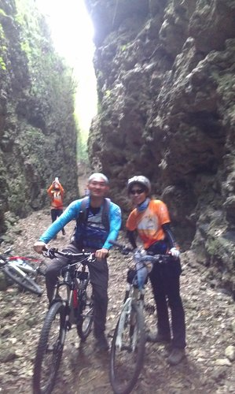
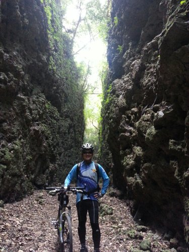
終於到達「一線天」，眾人歡呼稱道「漂亮，漂亮」，兩側高聳連天的山壁，溫暖的陽光從間隙潑灑而下，讓人有脫離俗世的感覺，快門取景變成唯一能為此美景永留記憶的方法(若非「洪山坡」學長的帶領，可能無法一窺此一漂亮的景點，為「洪山坡」學長按一萬個「讚、讚、讚‥‥」)。
小編按：
地點介紹：「一線天」相傳是永曆三十六年大崗山發生「山鳴」，山背自南而北龜裂所形成的一條山溝，站在洞內抬頭仰望天空，只見天空一直線，故名為「一線天」，此與墾丁國家公園的一線天有異曲同工之妙。洞內的景觀原始又自然，岩壁上有很多鐘乳石的痕跡，相當值得一觀。(資料來源：TraNews)
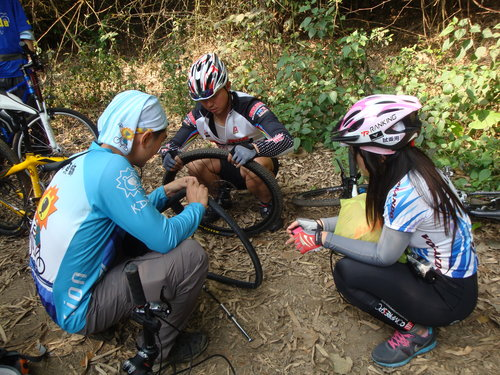
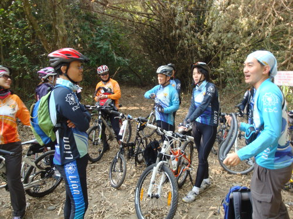
此次大崗山鐵馬之旅，狀況多多，有破胎、鏈條斷裂(小編腳踏車鏈條於造訪「一線天」路程中，不慎斷裂，擔誤大家時間真是抱歉抱歉)，多虧「洪山坡」及「volando」公司二位車手的大力幫忙，才得以順利完成此次之旅(「volando」為台灣「大田精密工業」自創之品牌，「volando」義大利文係指「飛翔」之意，該公司已獲得「臺灣精品獎」之肯定)，在此感謝、感謝。
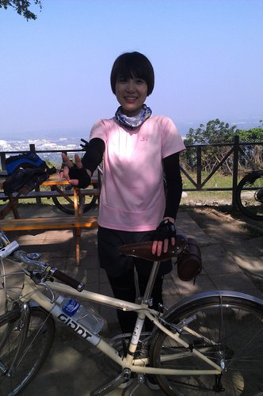
漂亮法助年前公開擇友條件：「‥喜歡胖胖的男生‥」，如有符合此條件的男生，請私下電話聯絡小燕姐姐，但是小燕姐姐不公布個人的行動電話號碼喔‥‥!!
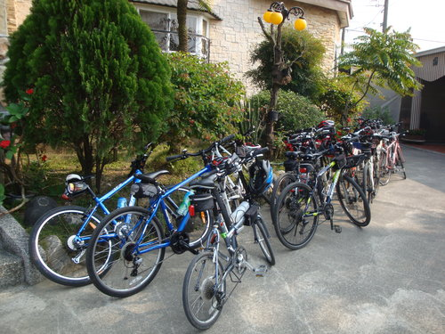
單車排成一列，想必主人們已經進入「田野香雞庭園」大享朵頤了。「洪山坡」學長稱下次只要向上開香雞庭園報其名字，就能享受在戶外用餐之優惠(疑!好像在室內包廂內用餐才是優惠吧?3個問號???)
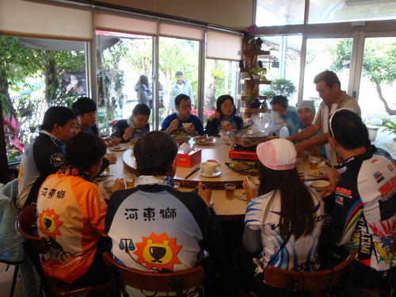
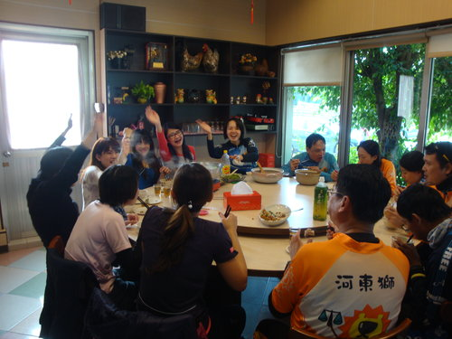
大崗山鐵馬之旅大成功，謝謝「洪山坡」學長、社長及小燕姐姐之策劃及安排，期待3月2日中寮甩肉之行，下次再見喔。